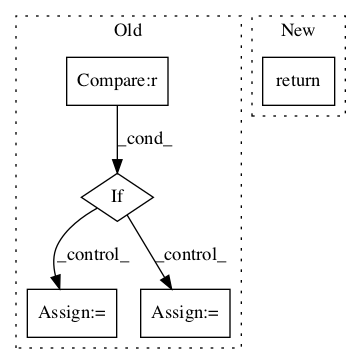

Pattern ID :323

Before Change
vb = self.verb_t2(token)
if vb is None:
vb = self.verb_t3(token)
if vb is None:
vb = self.verb_t4(token)
if vb is None:
vb = self.verb_t5(token)
if vb is not None:
token = vb
return token
else:
token = vb
return token
else:
token = vb
return token
else:
token = vb
After Change
return vb
vb = self.verb_t2(token)
if vb is not None:
return vb
vb = self.verb_t3(token)
if vb is not None:
return vb
In pattern: SUPERPATTERN
Frequency: 5
Non-data size: 5
Instances
Fragment ID: 1064976
Project Name: nltk/nltk
Commit Name: 4f93dc0a4def12a0dc50037885f6b395e0044930
Time: 2017-09-02
Author: k.abainia@gmail.com
File Name: nltk/stem/arlstem.py
Class Name: ARLSTem
Method Name: verb
Fragment ID: 1064821
Project Name: nltk/nltk
Commit Name: d6f8f69ca79e3b2ea9d748fb2a6d5e66e16ab01f
Time: 2015-08-30
Author: hoon.tw@gmail.com
File Name: nltk/align/ibm4.py
Class Name: IBMModel4
Method Name: prob_t_a_given_s
Fragment ID: 1065161
Project Name: nltk/nltk
Commit Name: 42276cfc3ce385117e2d7fb8c3899e3713479128
Time: 2007-03-17
Author: sumukh.ghodke@gmail.com
File Name: nltk_lite/contrib/classifier/nltk_lite_contrib/classifier/decisionstump.py
Class Name: DecisionStump
Method Name: klass
Fragment ID: 1064955
Project Name: nltk/nltk
Commit Name: 16a4e102530ec87cc5b70f32b2c02bf55947ccd0
Time: 2014-02-21
Author: stevenbird1@gmail.com
File Name: nltk/parse/projectivedependencyparser.py
Class Name: ProbabilisticProjectiveDependencyParser
Method Name: parse
Fragment ID: 1065150
Project Name: nltk/nltk
Commit Name: 1c706ce32b55a6f8ee1069d38d61e68ecd34851d
Time: 2007-05-06
Author: sumukh.ghodke@gmail.com
File Name: nltk_lite/contrib/classifier/decisiontree.py
Class Name: DecisionTree
Method Name: maximum_information_gain